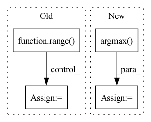

Pattern ID :18098
Before Change
return np.amax(input, axis=dim), np.argmax(input, axis=dim)
// Iterate over batches
for i in range( prediction.shape[0]) :
img_pred = prediction[i]
max_conf, max_conf_score = numpy_max(img_pred[:,5:5 + num_classes], 1)
max_conf_score = np.expand_dims(max_conf_score, axis=1)
max_conf = np.expand_dims(max_conf, axis=1)
seq = (img_pred[:,:5], max_conf, max_conf_score)
image_pred = np.concatenate(seq, axis=1)
non_zero_ind = np.nonzero(image_pred[:,4])[0]
assert all(image_pred[non_zero_ind,0] > 0)
image_pred_ = np.reshape(image_pred[np.squeeze(non_zero_ind),:], (-1, 7))
try:
image_pred_ = np.reshape(image_pred[np.squeeze(non_zero_ind),:], (-1, 7))
except:
print("No detections found!")
passAfter Change
// Iterate over batches
for img_pred in prediction:
max_conf = np.amax(img_pred[:,5:5+num_classes], axis=1)
max_conf_score = np.argmax( img_pred[:,5:5+num_classes], axis=1)
max_conf_score = np.expand_dims(max_conf_score, axis=1)
max_conf = np.expand_dims(max_conf, axis=1)
seq = (img_pred[:,:5], max_conf, max_conf_score)
image_pred = np.concatenate(seq, axis=1)In pattern: SUPERPATTERN
Frequency: 3
Non-data size: 4
Instances Fragment ID: 59308953
Project Name: geohot/tinygrad
Commit Name: 0f58c4c64869d44a74a08a6d5d1362d509740d1a
Time: 2023-02-26
Author: 39754370+jla524@users.noreply.github.com
File Name: examples/yolov3.py
M Class Name: AnonimousClass
N Class Name: AnonimousClass
M Method Name: show_labels(3)
N Method Name: show_labels(3)
M Parent Class:
N Parent Class:
M File Name: examples/yolov3.py
N File Name: examples/yolov3.py
M Start Line: 19
M End Line: 52
N Start Line: 15
N End Line: 36
Before Change
def build_strategy_and_cost(self, cluster_env, solver_option):
self.follow_ins = self.operands[0]
for i in range( len(self.shape)) :
name = f"S{i}"
self.strategies.append(InstructionStrategy(name, ShardingSpec.split(self.shape, i, cluster_env)))
self.compute_costs.append(0)
self.communication_costs.append(0)After Change
def build_strategy_and_cost(self, cluster_env, solver_option):
depths = [operand.depth for operand in self.operands]
follow_idx = np.argmax( depths)
follow = self.operands[follow_idx]
self.follow_ins = follow
for sid in range(len(follow.strategies)): Fragment ID: 59308955
Project Name: alpa-projects/alpa
Commit Name: 5c0350d7e7129afbc15ad4a555ea64ff3d332d65
Time: 2021-05-04
Author: lianminzheng@gmail.com
File Name: playground/auto_sharding_solver/hlo.py
M Class Name: HloElementwise
N Class Name: HloElementwise
M Method Name: build_strategy_and_cost(3)
N Method Name: build_strategy_and_cost(3)
M Parent Class: HloInstruction
N Parent Class: HloInstruction
M File Name: playground/auto_sharding_solver/hlo.py
N File Name: playground/auto_sharding_solver/hlo.py
M Start Line: 334
M End Line: 355
N Start Line: 463
N End Line: 488
Before Change
micro, macro = micro_macro(data.test_node_class, pred)
accuracy = np.zeros(shape=data.n_a_type) // auprc, auroc, ap
for i in range( data.test_range.shape[0]) :
[start, end] = data.test_range[i]
s = score[start: end]
t = torch.ones(size=s.shape)
accuracy[i] = acc(t, s)
return accuracy, micro, macroAfter Change
model.eval()
score = model.mcip(z, data.test_node_idx)
pred = torch.argmax( score, dim=1)
micro, macro = micro_macro(data.test_node_class, pred)
return micro, macro Fragment ID: 59308940
Project Name: nyxflower/gripnet
Commit Name: 6a1abf4efb8aad81109d87bf4029c5b1bb830875
Time: 2020-04-17
Author: nyx0flower@gmail.com
File Name: grip-auta.py
M Class Name: AnonimousClass
N Class Name: AnonimousClass
M Method Name: test(1)
N Method Name: test(1)
M Parent Class:
N Parent Class:
M File Name: grip-auta.py
N File Name: grip-auta.py
M Start Line: 114
M End Line: 125
N Start Line: 109
N End Line: 114